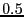
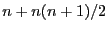

| A Manual for use of PyPedal
A software package for pedigree analysis |
| A Manual for use of PyPedal
A software package for pedigree analysis |
example = pyp_newclasses.loadPedigree(options) # Save the NRM to a file in ijk format. # Don't forget to set the filename. pyp_io.save_ijk(example,'nrm_ijk.txt')
$ head nrm_ijk.txt 4627 4627 1.125 4627 0832 0.0 4627 5538 0.5 ...
The coefficient of relationship between 4627 and 5538 is  (4627 is probably a parent of 5538). Note that the file nrm_ijk.txt will include only the diagonal and upper off-diagonal elements of the NRM, and should have  lines.
| A Manual for use of PyPedal
A software package for pedigree analysis |